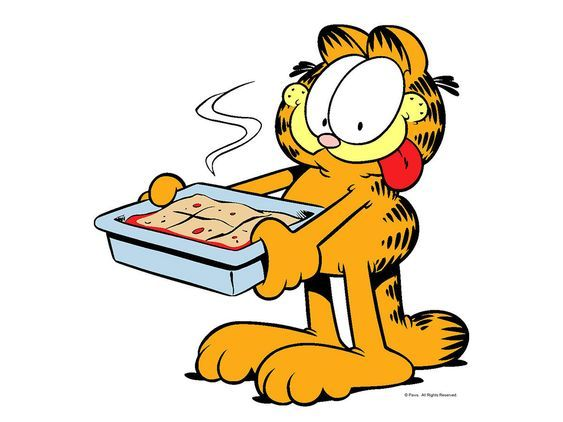

I don't really have a music type. I listen to everything my ears like.
At the moment my favourite song is "Waiting For Never" - Post Malone.
The whole album from Posty
I mostly listen to english music, new pop hits. But also, ours macedonian artists, and here is a daily reminder to support our locals.
About the movies, i kind of prefer series.
Right now I'm watching a serie called "Inside Man", and the actor really reminds me of our teacher.
In my free time, when i finish with the school work,
i prefer to be like the photo down here. I can sit for hours and watch non-stop. Can confirm that i'm lazy person.
Here is the actor, you can see if we share the same opinion.
David Tennant
The best thing in my life is some good made lasagna.I am a big fan to everykind of food but the italian cuisine is in my heart<3.
I usually want to eat lunch that includes meat, whether is chicken, pork.. and of course a salad with it, so it would not be dry.
Also, as i mentioned italian cuisine before, i really love pasta.
I definitley think that pasta is my frenemy. I love to eat it, it loves to make me fat!